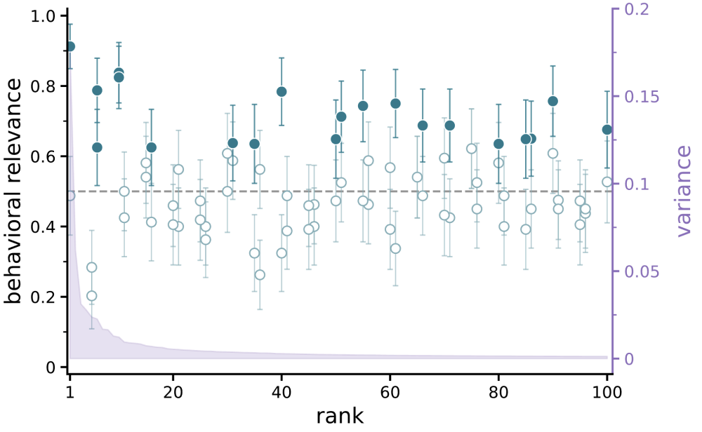
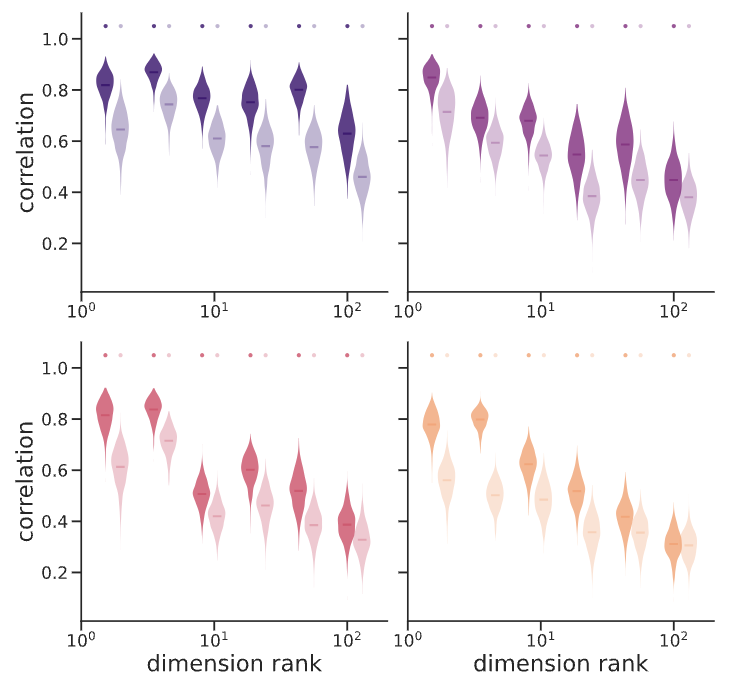
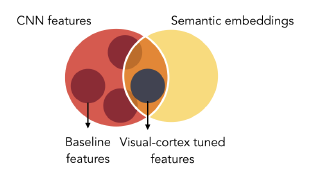
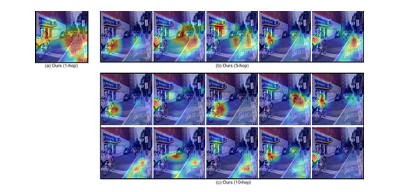
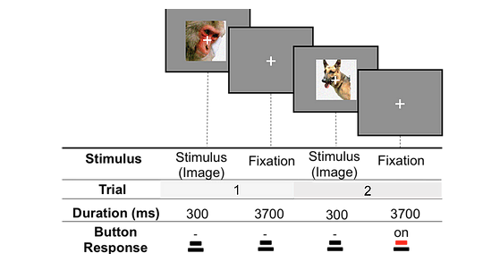
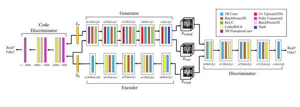

Chihye 지혜 [d͡ʑi.e]
Department of Cognitive Science Johns Hopkins University chan21@jhu.edu
I am a Ph.D. candidate in Cognitive Science at Johns Hopkins University, advised by Prof. Michael F. Bonner. I study the neural basis of visual experience using computational modeling, neuroimaging, and deep learning approaches. My research focuses on understanding how high-dimensional neural geometries give rise to complex, rich visual perception.
Previously, I received my M.S. in Electrical Engineering from KAIST and B.A. in Cognitive Science from Carleton College. I have also worked as an AI research strategist at LG AI Research and as a software engineer at Samsung Electronics.
|  |
Behavioral relevance of high-dimensional neural representations
Cognitive Computational Neuroscience, 2025 Does behavioral relevance extend throughout high-dimensional neural representations or is it restricted to interpretable, high-variance dimensions? We show that humans can perceive coherent structure in image clusters formed along principal components spanning the entire spectrum of ventral visual stream responses, suggesting that behaviorally relevant information is distributed across the full range of neural dimensions. Han, C., Gauthaman, R.M., & Bonner, M.F. |
|  |
High-dimensional structure underlying individual differences in naturalistic visual experience
How do different brains create unique visual experiences from identical sensory input? We reveal that individual visual experience emerges from a high-dimensional neural geometry across the visual cortical hierarchy. Han, C. & Bonner, M.F. |
|  |
Quantifying the latent semantic content of visual representations
Vision Sciences Society, 2021 How does visual cortex extract semantic meaning from images? We developed a statistical measure called semantic dimensionality that quantifies the number of language-derived semantic properties that can be decoded from image-computable perceptual features. Han, C., Magri, C., & Bonner, M.F. |
|  |
MHSAN: Multi-head self-attention network for visual semantic embedding
WACV, 2020 We propose a multi-head self-attention network to attend to various components of visual and textual data, achieving state-of-the-art results in image-text retrieval tasks. Park, G., Han, C., Yoon, W., & Kim, D. |
|  |
Representation of adversarial examples in humans and deep neural networks: an fMRI study
IJCNN, 2019 We compare the visual representations of adversarial examples in deep neural networks and humans using fMRI and representational similarity analysis. Han, C., Yoon, W., Kwon, G., Nam, S., & Kim, D. |
|  |
Generation of 3D brain MRI using auto-encoding generative adversarial networks
MICCAI, 2019 We generate realistic brain MR images of multiple types and modalities from scratch using alpha-GAN with WGAN-GP. Kwon, G., Han, C., & Kim, D. |